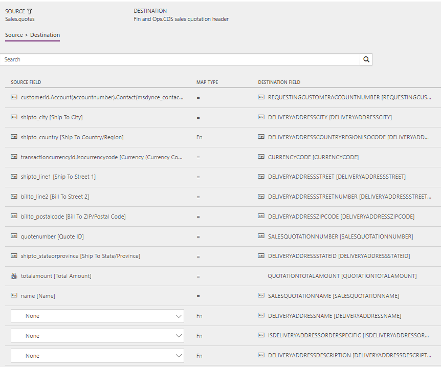

Synchronize sales quotation headers and lines directly from Sales to Supply Chain Management
[!include[rename-banner](~/includes/cc-data-platform-banner.md)]The topic discusses the templates and underlying tasks that are used to synchronize sales quotation headers and lines directly from Dynamics 365 Sales to Dynamics 365 Supply Chain Management.
Note
Before you can use the Prospect to cash solution, you should be familiar with Integrate data into Microsoft Dataverse for Apps.
Data flow in Prospect to cash
The Prospect to cash solution uses the Data integration feature to synchronize data across instances of Supply Chain Management and Sales. The Prospect to cash templates that are available with the Data integration feature enable the flow of data for accounts, contacts, products, sales quotations, sales orders, and sales invoices between Supply Chain Management and Sales. The following illustration shows how the data is synchronized between Supply Chain Management and Sales.

Template and tasks
The following template and underlying tasks are used to synchronize sales quotation headers and lines directly from Sales to Supply Chain Management:
Name of the template in Data integration: Sales Quotes (Sales to Supply Chain Management) - Direct
Names of the tasks in the Data integration project:
- QuoteHeader
- QuoteLine
The following synchronization tasks are required before synchronization of sales quotation headers and lines can occur:
- Products (Supply Chain Management to Sales) - Direct
- Accounts (Sales to Supply Chain Management) - Direct (if used)
- Contacts to Customers (Sales to Supply Chain Management) - Direct (if used)
Entity set
| Sales | Supply Chain Management |
|---|---|
| Quotes | Dataverse sales quotation header |
| QuoteDetails | Dataverse sales quotation lines |
Entity flow
Sales quotations are created in Sales and synchronized to Supply Chain Management.
Sales quotations from Sales are synchronized only if the following conditions are met:
- All quote products on the sales quotation are externally maintained.
- After you click Activate quote, the sales quotation is active.
Prospect to cash solution for Sales
The Has Externally Maintained Products Only field has been added to the Quote entity to consistently track whether the sales quotation consists entirely of externally maintained products. If a sales quotation has only externally maintained products, the products are maintained in Supply Chain Management. This behavior helps guarantee that you don't try to synchronize sales quotation lines that have products that are unknown to Supply Chain Management.
All quote products on the sales quotation are updated with the Has Externally Maintained Products Only information from the sales quotation header. This information is found in the Quote Has Externally Maintained Products Only field on the QuoteDetails entity.
A discount can be added to the quote product and will be synchronized to Supply Chain Management. The Discount, Charges, and Tax fields on the header are controlled by a setup in Supply Chain Management. Currently, this setup doesn't support integration mapping. In the current design, the Price, Discount, Charge, and Tax fields are maintained and handled in FSupply Chain Management.
In Sales, the solution makes the following fields read-only, because the values aren't synchronized to Supply Chain Management:
- Read-only fields on the sales quotation header: Discount %, Discount, and Freight Amount
- Read-only fields on quote products: Tax
Preconditions and mapping setup
Before sales quotations are synchronized, it's important that you update the following settings.
Setup in Sales
Make sure that permissions are set up for the team that the user from your connection set in Sales is assigned to. If you're using demo data, the user usually has admin access, but the team doesn't have admin access. If the team doesn't have admin access when you run the project from Data integration, you will receive an error message that states that the Principal team is missing.
To set up permissions for the team, go to Settings > Security > Teams, and select the relevant team. Select Manage Roles, and then select a role that has the desired permissions, such as System Administrator.
Go to Settings > Administration > System settings > Sales, and make sure that the following settings are used:
- The Use system prizing calculation system option is set to Yes.
- The Discount calculation method field is set to Line item.
Setup in the Data integration project
QuoteHeader
Make sure that the required mapping exists for Shipto_country to DeliveryAddressCountryRegionISOCode. In the value map, you can define a default value that is used if the value is left blank. Just leave the left side blank, and set the right side to the desired country or region. In this way, you don't have to type the country or region for national orders.
The template value is a value map where several countries or regions are mapped, and where a blank value equals a value of US.
QuoteLine
Make sure that the required value map exists for SalesUnitSymbol in Supply Chain Management.
Make sure that the required units are defined in Sales.
A template value that has a value map is defined for oumid.name to SalesUnitSymbol.
Optional: You can add the following mappings to help guarantee that sales quotation lines are imported into Supply Chain Management if there is no default information from either the customer or the product:
- SiteId – A site is required in order to generate quotations and sales order lines in Supply Chain Management. There is no default template value for SiteId.
- WarehouseId – A warehouse is required in order to process quotations and sales order lines in Supply Chain Management. There is no default template value for WarehouseId.
Template mapping in data integrator
Note
- The Discount, Charges, and Tax fields are controlled by a complex setup in Supply Chain Management. Currently, this setup doesn't support integration mapping. In the current design, the Price, Discount, Charge, and Tax fields are handled by Supply Chain Management.
- The Payment terms, Freight terms, Delivery terms, Shipping method, and Delivery mode fields aren't part of the default mappings. To map these fields, you must set up a value mapping that is specific to the data in the organizations that the entity is synchronized between.
The following illustrations show an example of a template mapping in data integrator.
QuoteHeader

QuoteLine